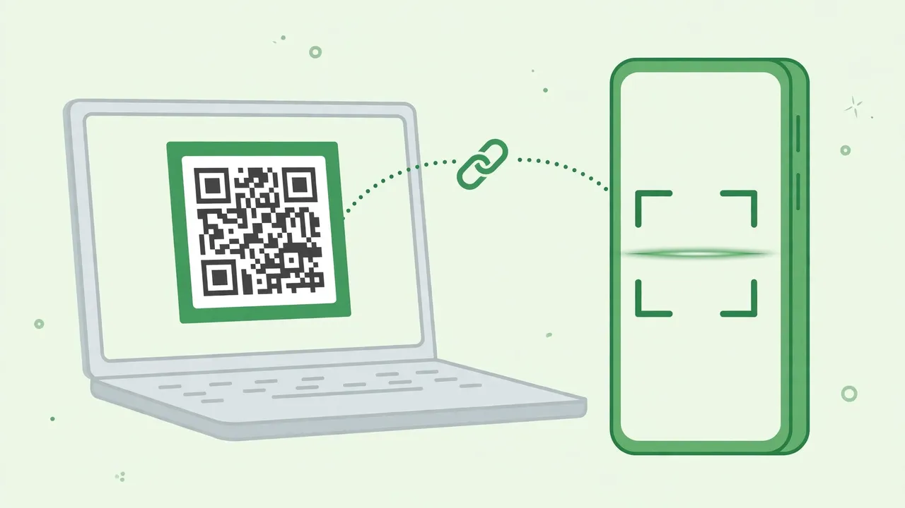

Let your AI agent search your own WhatsApp history: a hands-on guide to whatsapp-mcp
Your AI agent cannot see your WhatsApp messages — and WhatsApp's own search is hopeless across all your chats at once. whatsapp-mcp is a read-only bridge: it links like WhatsApp Web, encrypts your history on your own Cloudflare deployment, and lets your agent search it. Here is how to deploy it, link your phone, and ask the first questions.
npm run deploy, scan the QR code to link your phone, point your agent at /mcp, and ask it what anyone said.- What: whatsapp-mcp — a read-only MCP server over your own WhatsApp history, for Claude, ChatGPT, Grok or any MCP client. It links like WhatsApp Web and can never send, edit or delete a message.
- Project: finereli/whatsapp-mcp, MIT license, created 2026-10-18 — 359 stars (verified 2026-10-24).
- Self-host cost: a Cloudflare account on the Workers Paid plan ($5 a month, needed because the first import exceeds the free CPU limit), Node 20 or later, and your phone.
- Tools: list_chats, get_messages, search_messages, unnamed_chats, set_contact_names, sync_now, link_status and relink — eight read-and-organise tools, no sending tool.
- Search: exact words, case and accents ignored, several words must all appear, "quoted words" must appear together in order, a trailing * matches word starts; it is not fuzzy and does not stem. The project says a full scan of 200,000 messages takes about two seconds.
- Limits: media is never downloaded (photos and voice notes appear as labels only); there is no background sync; losing your password loses the stored copy; and WhatsApp's terms discourage the Baileys protocol it uses.
You know the message is in there. Someone sent the address, the flight time, the decision — months ago, in a group you muted, under a name you half remember. WhatsApp's own search is fine for one chat and hopeless across all of them, and your AI agent, for all its reading, cannot see your messages at all.
whatsapp-mcp fixes that one gap, and it does it with a deliberately small promise: read-only. It links to your phone the way WhatsApp Web does, through the open source Baileys library, and from then on any MCP client can search and read your chats. It cannot send anything, edit anything or delete anything — there is simply no tool for it. Your phone stays the source of truth; the server is a linked device that wakes up when your agent asks, collects what WhatsApp queued for it, writes that to its own encrypted database, and hangs up.
It is finereli/whatsapp-mcp, MIT licensed, created on 2026-10-18, with 359 GitHub stars at writing time. You can try it hosted for free, or run your own copy on Cloudflare for about $5 a month — and the honest difference between those two options is the whole reason to read the setup section carefully. Here is the self-hosted route, end to end.
What you'll need
- A Cloudflare account on the Workers Paid plan ($5 a month — the first import exceeds the free CPU limit)
- Node 20 or later, and git
- Your phone, with WhatsApp on it
- An MCP client: Claude Code, ChatGPT, Grok, or anything else that speaks MCP
- A password of 12 or more characters — this is what locks your messages, and there is no reset
Set up whatsapp-mcp for your own messages
1. Pick hosted or self-hosted
The quick way is the hosted beta: sign in with Google at whatsapp.finereli.com, scan the QR code with your phone, and add https://whatsapp.finereli.com/mcp to your agent. It is free, with a limited number of seats and a size limit per account. The catch, stated plainly in the project's own docs, is that the operator runs the login service and could in principle derive your key — messages are encrypted at rest, but that encryption is not a lock against the operator. If that bothers you, run your own copy, where the key comes from a password only you know. The rest of this guide is the own-copy route. The hosted shortcut is still useful as a five-minute trial before you commit to it.
The hosted front page also offers a one-line way to let your agent walk you through it — paste this into Claude, ChatGPT or Grok:
Set up WhatsApp for me via https://whatsapp.finereli.com. Read https://whatsapp.finereli.com/llms.txt and walk me through it.
2. Deploy your own copy
git clone https://github.com/finereli/whatsapp-mcp
cd whatsapp-mcp
npm install
# 1. A place for the sign-in tokens. Paste the id it prints into wrangler.jsonc.
npx wrangler kv namespace create OAUTH_KV
# 2. A password for your account. 12+ characters. This is what locks your messages.
npx wrangler secret put OWNER_PASSWORD
# 3. Deploy.
npm run deploy
Wrangler prints your URL, something like https://whatsapp-mcp.your-name.workers.dev. Two things to know before you go further. First, the first sign-in with OWNER_PASSWORD creates your account — after that, your account's own password is what counts, so changing the secret later does nothing. Second, if you lose that password, you lose the stored copy: nobody can reset it, because there is no master key and no recovery key. Your messages are still in WhatsApp, so you link again and import whatever history WhatsApp sends — but the stored copy is gone.

3. Link your phone
Open your deployment's URL. Sign in with the password, then scan the QR code with WhatsApp (Settings, Linked Devices, Link a Device). If you are on the phone itself and cannot scan a screen, use the phone number option instead. The first link imports your history; the page shows progress, and you can close it — the import keeps running.
One honest caveat from the docs: the first link imports whatever history WhatsApp decides to hand a new device. It may not be everything, and it only does this once per link. To import again, relink — your stored messages are kept, and a re-import fills in anything missing.
4. Connect your agent
Point your MCP client at your deployment's /mcp endpoint and sign in with the password when it asks. In Claude Code:
claude mcp add --transport http whatsapp https://your-url/mcp
Then type /mcp to confirm the connection. ChatGPT calls an MCP server a connector; Grok and anything else that speaks MCP works the same way. The front page also has Claude, ChatGPT and Grok buttons that copy a setup message and open the assistant, so you paste it there.
5. Ask your first questions
Now ask the way you would ask a person who read everything. The project's own examples:
What did Dana say about the flights?
Find every message where someone mentioned the lease, across all my chats.
Summarize what I missed in the family group this week.
Behind those prompts sit eight tools: list_chats (chats, most recent first), get_messages (read one chat, paging by date), search_messages (search across everything or within one chat), unnamed_chats, set_contact_names, sync_now, link_status and relink. Two search habits are worth knowing. First, search is exact words: case and accents ignored, several words must all appear, quoted words must appear together in order, and a trailing * matches word starts — it is not fuzzy and it does not stem. Second, put every search you need in one search_messages call: the messages are encrypted, so there is no search index, and a search decrypts and scans, newest first, stopping as soon as it has enough matches. The project says a full scan of 200,000 messages takes about two seconds, and that decrypting cost is paid once however many queries ride along.
6. Name the chats WhatsApp leaves unnamed
WhatsApp does not give a linked device every contact name, so some chats show up as phone numbers — mostly one-off messages from people you never saved. Say "find names for my unnamed chats": your agent calls unnamed_chats, matches the numbers against your contacts with whatever contacts tool it already has (a Google Contacts or Gmail connector, for example), and saves what it finds with set_contact_names. Names stick to the number, so they also show up in groups. The server itself never connects to a contacts service — that is deliberate, so it needs no cloud project, consent screens or app review.
7. Check the link, and delete everything if you want out
Ask your agent for link_status: is it linked, when did it last pull, how much is stored. And know the exit before you need it: "Delete my data" on the dashboard unlinks WhatsApp and erases your messages, names, keys and account, and disconnects every agent. If your phone ever says the device was removed, or you want to start over, ask your agent to run relink, or open /setup and choose "Unlink and scan again" — you scan a new QR code and stored messages are kept.
What you built
Your own read-only bridge between WhatsApp and your AI agent: a Cloudflare deployment that holds an encrypted copy of your message history, a phone link you can revoke, and an agent that can finally answer "what did they say about the lease?" across every chat at once. No message ever leaves WhatsApp through a sending tool, because no such tool exists — and on your own copy, no operator holds a key to your stored messages either.
Honest limitations
- Syncing happens only when your agent asks. There is no scheduled pull, because the data key only exists while someone is signed in, and a background job would have nothing to decrypt with. Every read tool tops up from WhatsApp first if the stored copy is more than ten minutes old, so day to day you notice nothing — but an account nobody uses for weeks may have lost the messages WhatsApp was holding for it, and would need a full resync.
- Media is not downloaded. Photos, voice notes and documents appear as labels like
[image]or[voice note 12s], with the caption if there was one. Nothing is transcribed, so your agent cannot search what was said in a voice note or shown in a photo. - WhatsApp discourages this. It uses the same protocol as WhatsApp Web through Baileys, and WhatsApp's terms discourage that. WhatsApp could restrict or close an account that does it. The project calls the risk for a read-only linked device low, but it is not zero — use it on your own account, and do not use it to send messages.
- The people in your chats did not agree to this. Their messages to you are in the copy too. That is your call to make, and the project's docs say so outright rather than burying it.
- Search is exact, not smart. No fuzzy matching, no stemming: a misspelling or a synonym will miss. Batch your queries in one call and use the trailing
*wildcard for word starts. - It has only been exercised against one real account. The project's own known-gaps list says so, along with untested edit/delete handling and no password-change feature yet. And it is six days old at writing time — expect fast-moving docs.
Frequently asked questions
Can whatsapp-mcp send WhatsApp messages for me?
No. It is read-only on purpose: there are no tools that send, edit or delete anything in WhatsApp, and the project says not to add sending without thinking hard about it first.
Who can read my messages: the hosted version or my own copy?
Both encrypt messages at rest, but on the hosted version the login service's operator can derive your key, so the encryption does not lock them out. On your own copy the key comes from a password only you know, there is no master key and no recovery key — and if you lose that password, you lose the stored copy and must link again.
Could WhatsApp restrict my account for using it?
Possibly, though the project calls the risk low for a read-only linked device. It uses the same protocol as WhatsApp Web through the open source Baileys library, and WhatsApp's terms discourage that, so the risk is not zero.